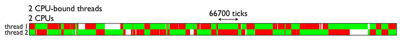

An example
In the following Python program, it seems it should reach 100% CPU. In fact, it takes only 50% of CPU resources.
import threading
# 子线程死循环
def test():
while True:
pass
t1 = threading.Thread(target=test)
t1.start()
# 主线程死循环
while True:
pass
Introduction
Python全局解释器锁(Global Interpreter Lock)是用于同步线程的一种机制，它使得任何时刻仅有一个线程在执行。上面例子中虽然两个线程是死循环，而且有两个物理CPU内核，但因为 GIL的限制，两个线程只是做着分时切换，总的CPU占用率还略低于50％。
Note: One thread runs Python, while N others sleep or await I/O
Visualization:
All of those red regions indicate times where the operating system has scheduled a Python thread on one of the cores, but it can't run because the thread on the other core is holding it.

Cooperative Multitasking
When it begins a task, such as network I/O, that is of long or uncertain duration and does not require running any Python code, a thread relinquishes the GIL so another thread can take it and run Python. This polite conduct is called cooperative multitasking(协同式多任务处理), and it allows concurrency; many threads can wait for different events at the same time.
Say that two threads each connect a socket:
def do_connect():
s = socket.socket()
s.connect(('python.org', 80)) # drop the GIL
for i in range(2):
t = threading.Thread(target=do_connect)
t.start()
Only one of these two threads can execute Python at a time, but once the thread has begun connecting, it drops the GIL so the other thread can run. This means that both threads could be waiting for their sockets to connect concurrently, which is a good thing. They can do more work in the same amount of time.
Let's pry open the box and see how a Python thread actually drops the GIL while it waits for a connection to be established, in socketmodule.c:
/* s.connect((host, port)) method */
static PyObject *
sock_connect(PySocketSockObject *s, PyObject *addro)
{
sock_addr_t addrbuf;
int addrlen;
int res;
/* convert (host, port) tuple to C address */
getsockaddrarg(s, addro, SAS2SA(&addrbuf), &addrlen);
Py_BEGIN_ALLOW_THREADS
res = connect(s->sock_fd, addr, addrlen);
Py_END_ALLOW_THREADS
/* error handling and so on .... */
}
The Py_BEGIN_ALLOW_THREADS macro is where the thread drops the GIL; it is defined simply as:
PyThread_release_lock(interpreter_lock);
And of course Py_END_ALLOW_THREADS reacquires the lock. A thread might block at this spot, waiting for another thread to release the lock; once that happens, the waiting thread grabs the GIL back and resumes executing your Python code. In short: While N threads are blocked on network I/O or waiting to reacquire the GIL, one thread can run Python.
Below, see a complete example that uses cooperative multitasking to fetch many URLs quickly. But before that, let's contrast cooperative multitasking with the other kind of multitasking.
Preemptive multitasking
A Python thread can voluntarily release the GIL, but it can also have the GIL seized from it preemptively(Preemptive multitasking,抢占式多任务处理).
Let's back up and talk about how Python is executed. Your program is run in two stages. First, your Python text is compiled into a simpler binary format called bytecode. Second, the Python interpreter's main loop, a function mellifluously named PyEval_EvalFrameEx(), reads the bytecode and executes the instructions in it one by one.
While the interpreter steps through yourbytecode it periodically drops the GIL, without asking permission of the thread whose code it is executing, so other threads can run:
for (;;) {
if (--ticker < 0) {
ticker = check_interval;
/* Give another thread a chance */
PyThread_release_lock(interpreter_lock);
/* Other threads may run now */
PyThread_acquire_lock(interpreter_lock, 1);
}
bytecode = *next_instr++;
switch (bytecode) {
/* execute the next instruction ... */
}
}
By default the check interval is 1000 bytecodes. All threads run this same code and have the lock taken from them periodically in the same way. In Python 3 the GIL's implementation is more complex, and the check interval is not a fixed number of bytecodes, but 15 milliseconds. For your code, however, these differences are not significant.
解决办法
用multiprocessing替代Thread
利用multiprocessing模块，可以很方便的处理。但进程会增加程序实现时线程间数据通讯和同步的困难。
利用ctypes绕过GIL
ctypes可以让Python 接调用任意的C动态库的导出函数。
from ctypes import *
from threading import Thread
#加载动态库
lib = cdll.LoadLibrary("./libdeadloop.so")
#创建一个子线程，让其执行ｃ语言编写的函数，此函数是一个死循环
t = Thread(target=lib.DeadLoop)
t.start()
#主线程，也调用ｃ语言编写的那个死循环函数
#lib.DeadLoop()
while True:
pass